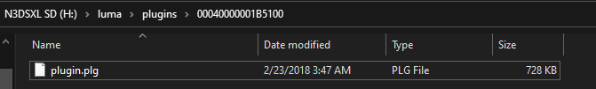
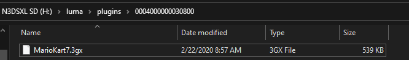
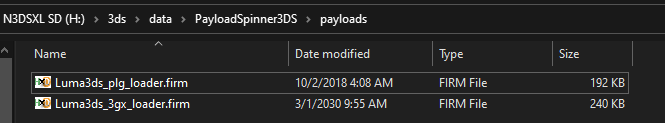

Luma3ds plugin loader guide
This guide will teach you how to install and use 2 custom luma forks with different plugin types
Credit to It'sPizzaTime#4530 on discord for the images and the rest of this terrible guide
If you're trying to use the ACNL plugin you need to follow the steps in the AC Modding Hub
Requirements
- A console with boot9strap installed
- A plugin file you want to use (
.3gxor.plg), if you don't have any you can find them by doing a quick google search, here's a list of some good ones:
Pokemon Ultra Sun and Ultra Moon: ultraSuMoFramework
Pokemon Sun and Moon: sumoCheatMenu
Mario Kart 7: Mario Kart 7 Online NTR Plugin
The Legend of Zelda: Ocarina of Time 3D: Zelda-Ocarina-Of-Time-3D-Plugin
Assorted Games: CTRPF Plugins 3.0
Installing plugin type .plg
- Download the
boot.firmfrom here and place it on your sd root, make sure you overwrite the current one. - Rename your
.plgfile toplugin.plg - Make a folder called
pluginsif it doesn't already exist in thelumafolder on your sd - Inside of the
pluginsfolder make a folder named the titleid of the game you want to use the plugin file for (If you don't know the game titleid you can find a list here or here) -
Place the
plugin.plgfile in the folder you just created, if you are having trouble understanding here's an example that might help:

(in this example00040000001B5100is Pokemon Ultra Moon's titleid) - Insert your sd card into your 3ds and boot it up, if you get a luma config screen select
Show NAND or user string in System Settingsand press start - Once you're in the home menu, open the rosalina menu (L + Dpad Down + Select by default) and select
Enable Plugin Loader - Press B to exit the rosalina menu
(note: if the plugin loader is enabled the option will sayDisable Plugin Loaderand if the plugin loader is disabled the option will sayEnable Plugin Loader) - When you launch the game you setup a plugin for your screen should flash green during the Nintendo 3ds splash
- The standard for cheat menus is the select button, if pressing select doesn't work consider reading the readme of the plugin you're using
Installing plugin type .3gx
- Download the
boot.firmfrom here and place it on your sd root, make sure you overwrite the current one. - Make a folder called
pluginsif it doesn't already exist in thelumafolder on your sd - Inside of the
pluginsfolder make a folder named the titleid of the game you want to use the plugin file for (If you don't know the game titleid you can find a list here or here) - Place your
.3gxfile in the folder you just created, here is an example that could be helpful: 
(in this example0004000000030800is Mario Kart 7 Rev 01 USA's titleid) - Insert your sd into your 3ds and boot it up, if you get a luma config screen select
Show NAND or user string in System Settingsand press start - Once you're in the home menu, open the rosalina menu (L + Dpad Down + Select by default) and enable the plugin loader
- Press B to exit rosalina
- Open the game you installed a plugin for, your screen should flash green or blue during the Nintendo 3ds splash
- The standard for cheat menus is the select button, if pressing select doesn't work consider reading the readme of the plugin you're using
(Optional) How to switch between 3gx and plg loader luma easily
- Download both
boot.firm's (Luma 3gx Loader | Luma plg loader) - Rename both
boot.firm's to something else likeLuma3ds_3gx_loader.firmfor the3gxloader andLuma3ds_plg_loader.firmfor theplgloader - Download and install PayloadSpinner3ds on your 3ds. Here is a QR you can scan with FBI (FBI -> Remote Install -> Scan QR Code)
- Once it's done installing, exit to your home menu and open the app once. It should say
No payloads were found. Refer to README, just press A to exit - Place both firm files in
/3ds/data/PayloadSpinner3DS/payloadson your sd like this: 
Now when you want to switch between luma plg loader and luma 3gx loader you can open PayloadSpinner3DS and select whichever one you want to use
Troubleshooting
Game crashes when using a plugin
Fix: Don't use that plugin
Screen doesn't flash and plugin doesn't load
Fix: Check if you got the right titleid, if you're sure you did try a different plugin